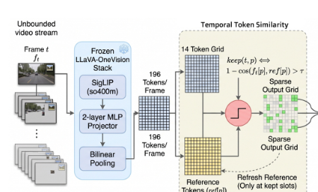
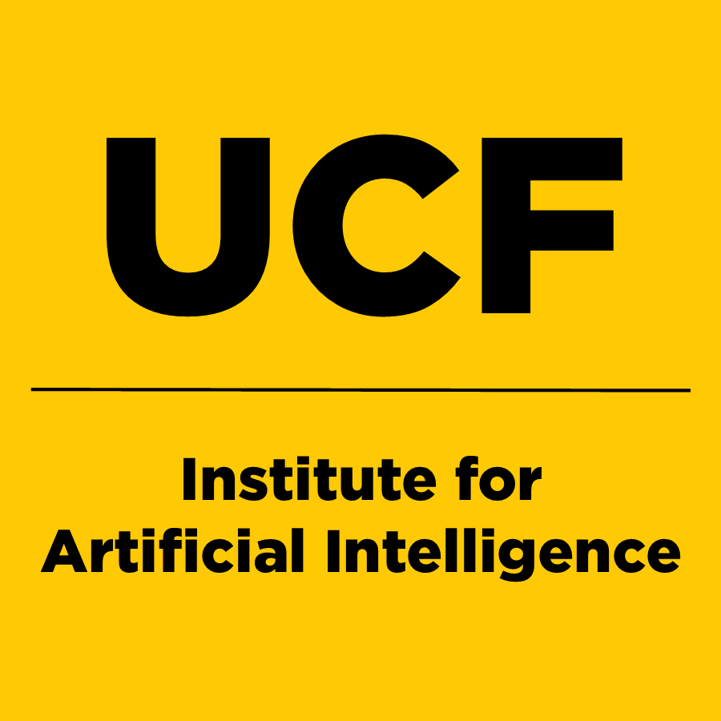
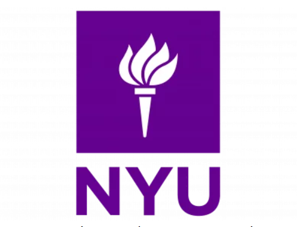
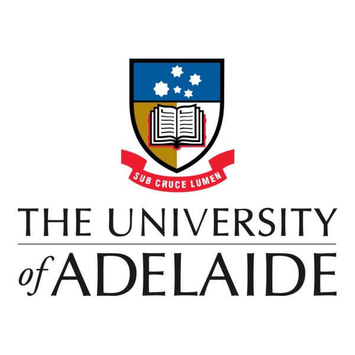

|
Avinash Gyawali I'm a second-year M.Sc. student in Computer Vision at the University of Central Florida, graduating in Spring 2027. I completed my Bachelor's degree at New York University Abu Dhabi, where I was involved in AR/VR and HCI research. |
{kind=link}
Research InterestsMy research interests focus on Efficient Multimodal Large Language Models, Streaming Video LLMs, Action Recognition, and 3D Reconstruction. |
Publications |
|
 |
StreamPrune: Casual and query-free token pruning for accelerating streaming MLLMs
Paper * Avinash Gyawali, Rajat Modi, Yuzhang Shang, Yogesh S Rawat 2026 Preprint - Under Review at ICLR 2027 |

|
PatientCare: A Benchmark for Fine-Grained Clinical Action Understanding in Patient Safety
Paper * Avinash Gyawali, Priyank Pathak, Sirshapan Mitra, Shruti Vyas, Yogesh S Rawat 2026 Preprint / Benchmark - Under Review at NeurIPS 2026 |

|
Segmented Visual Geometry Grounded Transformer
Paper * Avinash Gyawali, Yushra Ahmed August 2025 Preprint - Under Review |

|
A Custom Haptic Syringe to Improve Virtual Reality Local Anesthesia Surgical Training
Paper * Avinash Gyawali, Mohamad Eid, Marci Levine, Elizabeth C McAlpin November 2024 Accepted , Open Journal of Applied Sciences |
Experience |
|
 |
Computer Vision Research Assistant
Center for Research in Computer Vision, UCF | Orlando, USA August 2025 – November 2025
|
|
 |
Research Assistant
Applied Multimedia Lab, NYUAD | Abu Dhabi, UAE August 2024 – May 2025
|
|
 |
HCI Research Intern
Empathic Computing Lab, University of Adelaide | Adelaide, Australia June 2024 – December 2024 (Advised by Dr. Mark Billinghurst)
|
Awards & Recognition |
|
Skills |
|
Programming Languages: Python, C++, C#, SQL
|
Education |
|
M.Sc. Computer Vision
|
University of Central Florida (UCF) | Orlando, USA
2025 – 2027 | GPA: 3.8/4.0 |
|
B.Sc. Computer Science
|
New York University Abu Dhabi (NYUAD) | Abu Dhabi, UAE
2021 – 2025 | GPA: 3.78/4.0 |
|
Portfolio based on Jon Barron's template. |